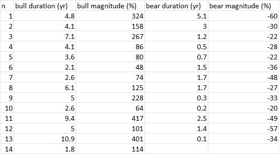
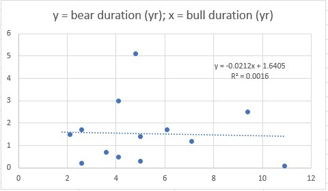
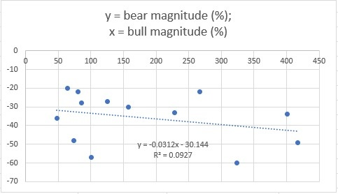
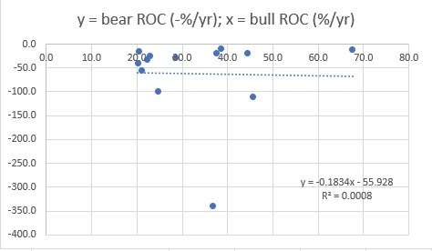
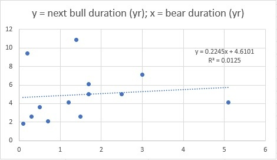
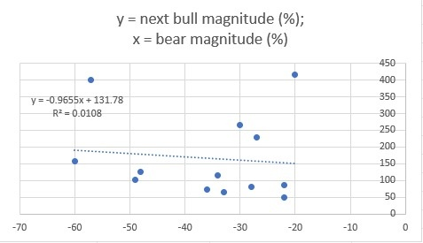
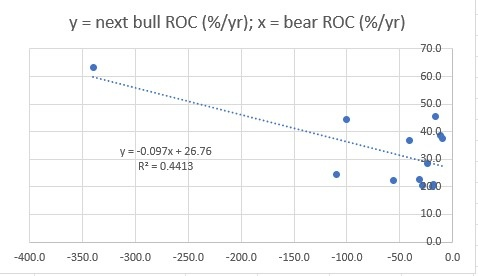

要討論這個論題要先定義timeframe，一項資產於不同timeframe的特性都不盡相同，例如可以short term reversion、mid term momentum、long term reversion等等。
有沒有實例？以現實生活為例，天氣就是這樣。以此刻香港天氣做例子，短線如果極高溫eg. 36度，可以預期下一天溫度不會高於36度；而中線方面，由夏入秋，溫度將會由30度以上慢慢跌落25，再跌落20，因此是momentum；而長線角度看，一年有四季，每年皆由由30度到10度再到30度，因此呈現reversion狀態。
放諸金融市場，超短線股價/商品價/幣價常出現bid ask bouncing，是為reversion；中線會有機構以TWAP掃貨，造成日線圖連升，引致momentum；長線有牛熊週期，實為reversion也。
是次文章打算集中討論的timeframe為超長線，我打算研究一下歷史中的牛熊浪有否呈現如坊間所說的現象：牛市長，熊市也會長；牛市升得多，熊市也會跌得多。
是次分析拿來了過去接近100年美股數據，由1933年開始到現時一共13次的牛熊市數據。Raw data中有每次牛熊浪的歷時以及變幅。

第一項分析，可先看，牛市歷時長，熊市是否也會更長。

結果顯示，關係不太明顯，r^2近乎0。牛市無論有多長，熊市也是平均1-2年。
第二項分析，可以看牛市升得多，熊市是否也跌得多。

結果顯示，有極微弱關係，但r^2亦是奇低。
第三項分析，可以把升跌幅除歷時，以計算升跌速度，亦有人稱之為變速率，rate of change (ROC）。看看是否牛市升得急，熊市也會跌得急。

結果顯示，無關係，無論牛市升得急或緩，熊市大多數也是以一年跌50%左右速度發生。
分析是否完畢了？很多人也會在此停下來，轉而研究另一topic。非也，除了看牛市對熊市影響外，也可看看熊市對下一個牛市的影響。
第四項分析，看看熊市跌得久，下個牛市是否也會升得久。

結果顯示，關係稍明顯，但仍微弱，r^2只有0.0125。
第五項分析，看熊市跌得多，下個牛市是否會升得多。

結果顯示，關係稍明顯，但仍弱，r^2同樣只有0.0108。
最後一項分析，看熊市跌得急，下個牛市是否也會升得急。

結果顯示，關係為一眾分析中最明顯，r^2達0.4413，熊市急跌，可以預期下個牛市急升。
整個分析顯示，坊間很多人以為正確的陳述，都並非正確，不能因為「看似」正確而相信；真正alpha在於，熊市速率對下個牛市速率有啟示。
希望這個分析能幫到大家，亦在此鼓勵大家多看數據，多做backtest。